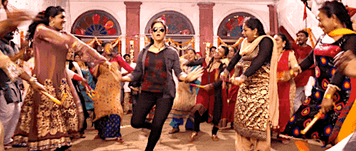
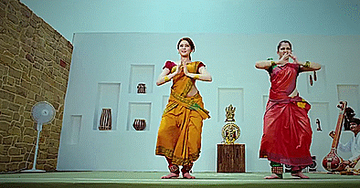
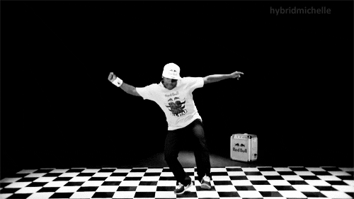
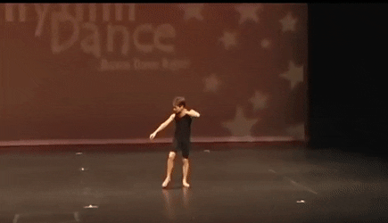
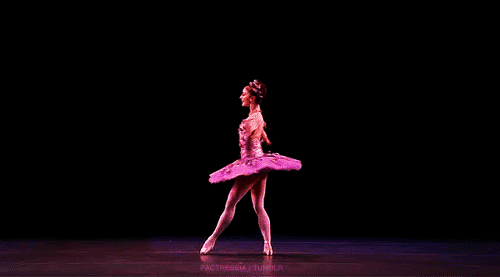
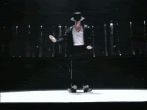

Folk Classical Hiphop Lyrical Ballet Western
FOLK DANCE:

A folk dance is developed by people that reflect the life of the people of a certain country or region.Not all ethnic dances are folk. For example, ritual dances or dances of ritual origin are not considered to be folk dances. Ritual dances are usually called "Religious dances" because of their purpose.The terms "ethnic" and "traditional" are used when it is required to emphasize the cultural roots of the dance.In this sense, nearly all folk dances are ethnic ones. If some dances, such as polka,cross ethnic boundaries and even cross the boundary between "folk" and "ballroom dance",ethnic differences are often considerable enough to mention.
CLASSICAL DANCE:

The number of recognized classical dances range from eight to more, depending on the source and scholar.[7] The Sangeet Natak Akademi recognizes eight – Bharatanatyam, Kathak, Kuchipudi, Odissi, Kathakali, Sattriya, Manipuri and Mohiniyattam.[8] Scholars such as Drid Williams add Chhau, Yakshagana and Bhagavata Mela to the list.[9][3] The Culture Ministry of the Government of India includes Chhau in its classical list. These dances are traditionally regional, all of them include music and recitation in local language or Sanskrit, and they represent a unity of core ideas in a diversity of styles, costumes and expression. Indian classical dance is made from India and classical dance is played by various actors.
HIPHOP DANCE:

Hiphop refers to street dance styles primarily performed to hip-hop music or that have evolved as part of hip-hop culture. It includes a wide range of styles primarily breaking which was created in the 1970s and made popular by dance crews in the United States. The television show Soul Train and the 1980s films Breakin', Beat Street, and Wild Style showcased these crews and dance styles in their early stages; therefore, giving hip-hop mainstream exposure. The dance industry responded with a commercial, studio-based version of hip-hop—sometimes called "new style"—and a hip-hop influenced style of jazz dance called "jazz-funk". Classically trained dancers developed these studio styles in order to choreograph from the hip-hop dances that were performed on the street. Because of this development, hip-hop dance is practiced in both dance studios and outdoor spaces.
LYRICAL DANCE:

The history of lyrical dance has not been as clearly documented as other styles of dance. There is little research and documentation of the origins of lyrical dance most likely due to the limited use of this style outside of the competition dance world.[1] There are three popular origin stories for lyrical dance that have been suggested by experts of competition dance. The first, speculated by Jimmy Peters, is that lyrical dance evolved from the “dream ballet” in musicals such as Oklahoma and West Side Story. The second from Chelya Clawson, states that this term can be traced back to 16th century traditional Indian dance. The last, and the most plausible, created by Phyllis Balanga- Demoret, is that it began about 25 years ago as a result of ballet’s inability to take to the competition stage.[4] Even though there has been no official documentation, Balanga-Demoret’s explanation is the most plausible because lyrical dance is only used in competition dance. Additionally, ballet is rarely seen on a competitive stage, despite it having its own category at many competitions, which further confirms Balanga- Demoret’s theory. Dancer, teacher, and choreographer Suzi Taylor, who holds regular classes at Steps on Broadway in New York City, is considered by many to be an early mother of lyrical dance, having emphasized a unique brand of musicality and expressiveness which influenced many future teachers and choreographers.
BALLET DANCE:

Ballet is a type of performance dance that originated during the Italian Renaissance in the fifteenth century and later developed into a concert dance form in France and Russia. It has since become a widespread, highly technical form of dance with its own vocabulary based on French terminology. It has been globally influential and has defined the foundational techniques used in many other dance genres and cultures. Ballet has been taught in various schools around the world, which have historically incorporated their own cultures and as a result, the art has evolved in a number of distinct ways. See glossary of ballet.
WESTERN DANCE:

Western dance, also called country and western dance, encompasses many dance forms or styles, which are typically danced to country-western music,and which are stylistically associated with American country and/or western traditions. Many of these dances were "tried and true" dance steps that had been "put aside" for many years, and became popular under the name(s) "country-western", "cowboy", or "country". Country dancing is also known as "kicker dancing" in Texas.